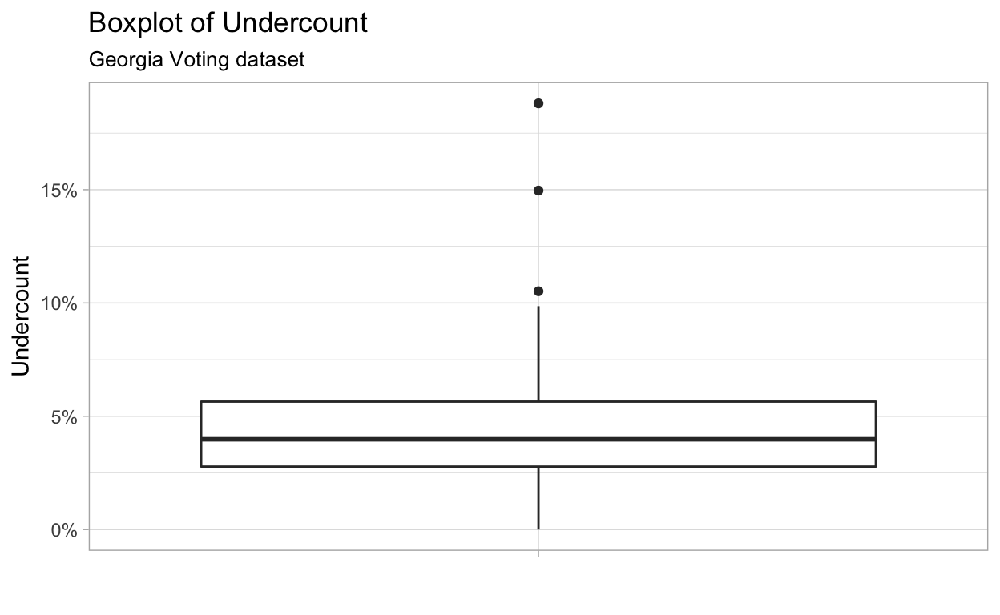
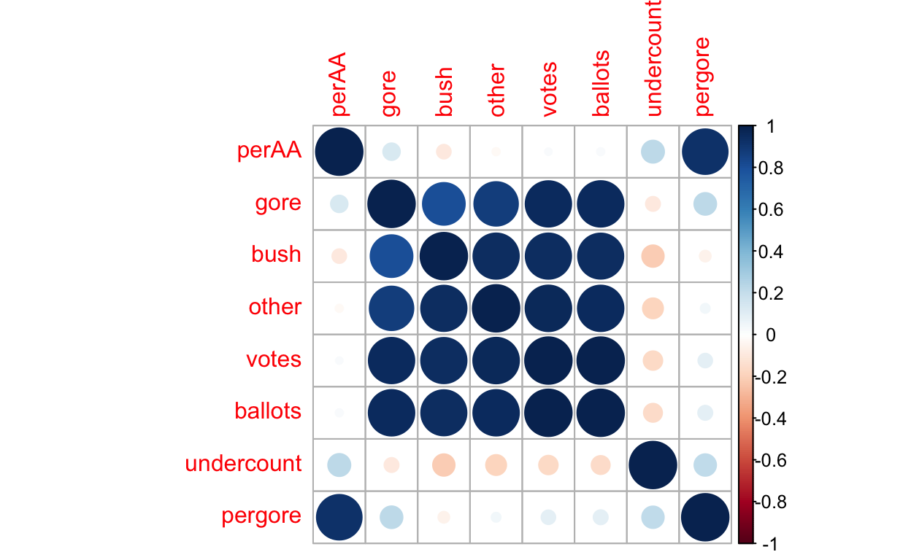

This tutorial is an introduction to data analysis and statistical modelling, at the level expected of students enrolled in STA303: Methods of Data Analysis II at the University of Toronto. Some of the R packages and techniques in this tutorial may be new to students, however it is expected that the concepts herein are review: initial data analysis and plotting, linear modelling, variable selection and transformation, diagnostic analysis of linear models, and so forth.
This notebook follows the extended example from Faraway (2006): Extending the Linear Model with R, chapter 1. You are expected to read this entire chapter in detail along with this tutorial.
The dataset we will use is the gavote dataset from the faraway package in R. You may load the data and the packages we need to analyze it as follows:
data(gavote)
gavote_tbl <- as_data_frame(gavote) # Create a tidy dataframe containing the gavote dataThe above steps have been run for you for all interactive code chunks in this tutorial.
You can investigate the structure of the gavote data using the following commands:
gavote_tbl: typing the name of the dataframe in the R console will print it to the screen. For regular data.frames, this prints the whole dataframe, which is messy. For tidy dataframes as we have defined here, of class c("tbl_df","tbl","data.frame"), printing the dataframe to the screen will give clean, concise outputglimpse(gavote_tbl): the function glimpse in the package dplyr prints the dataframe sideways, allowing you to see all the variables and their datatypes, as well as showing the number of observations and variablesTry using these commands to look at the basic structure of the gavotes data. You should be able to answer how many observations and variables are in the dataframe, whether there are continuous and categorical variables present, whether all variables are measured on the same scale or not, and so forth. If you need help with the syntax of any R command, you may type ?command or help(command).
Now we move on to some initial data analysis, as described in Faraway, chapter 1, pages 3 - 7.
To obtain a basic numerical summary of all variables, use the summary function directly on the dataframe of interest. This will print out appropriate summary information depending on the variable’s type:
?summary for further details.Try it yourself:
summary(gavote_tbl)You can also get this with base R and dplyr functions. For quantitative responses, you can use the mean, min and max functions to get the mean of a numeric vector of data. You can use the quantile function to get quantiles. Read the documentation on this function to figure out how to get it to return a specific quantile- you want the median (50th percentile), and the 1st and 3rd quartiles (25th, 75th percentiles).
To operate directly on the columns in a dataframe, Faraway uses the dataframe$column syntax. A more modern and elegant way is to use dplyr’s functions to create a small data analysis pipeline.
Try it yourself: for the numeric variables in the dataset, compute the 6 number summary in proper dplyr syntax. There are hints provided.
gavote_tbl %>%
summarize_if() # See documentation on summarize_if for detailsgavote_tbl %>%
summarize_if(is.numeric) # See documentation on summarize_if for detailsgavote_tbl %>%
summarize_if(is.numeric,funs(mean=mean))# See documentation on summarize_if for detailsgavote_tbl %>%
summarize_if(is.numeric,funs(mean=mean,
min=min,
q1=quantile(.,.25),
median=quantile(.,.5),
q3=quantile(.,.75),
max=max))Faraway describes the context surrounding this dataset in detail. They describe the response variable of interest as being the proportion of undercount in each county- the proportion of cast ballots that did not include a valid vote for president. We need to compute this variable in our data.
Faraway adds new variables to the dataframe by assigning values to columns that don’t yet exist, as dataframe$new_column <- value. A more elegant way to do this is, again, using dplyr syntax. In particular, the mutate function in dplyr allows us to create a new dataframe containing all the columns in the old dataframe, plus new computed columns, which may reference other columns. For example, to create a variable representing the total number of votes for Gore or Bush (the two main candidates) in the dataframe, you may type:
gavote_new <- gavote_tbl %>%
mutate(new_var = gore + bush)
gavote_new %>% select(gore,bush,new_var,votes)Try it yourself. The variable we wish to compute is undercount, and it is equal to \[
\frac{\mbox{number of ballots} - \mbox{number of votes}}{\mbox{number of ballots}}
\] Your task is to figure out which variables in the dataset represent these quantities, and then define a new dataframe called gavote_undercount containing the variable undercount. This has already been done for you behind the scenes, so you may check your answer against the already existing gavote_undercount dataframe.
gavote_undercount <- gavote_undercount <- gavote_tbl %>%gavote_undercount <- gavote_tbl %>%
mutate(undercount = )gavote_undercount <- gavote_tbl %>%
mutate(undercount = (ballots - votes) / ballots)The next step is to investigate the univariate characteristics of our variables. We are interested in their univariate empirical distributions, and we might ask questions like
Such questions can inform us of potential difficulties when building a model using our data, and can address even more basic concerns such as whether the data were collected and reported properly.
To investigate the univariate distribution of a quantitative variable in our dataset, we use two graphical summaries: a histogram, and a kernel density plot.
Faraway explains how to make these plots in base R. Here we use ggplot. You can look at the ggplot cheatsheet if you want more information; here we provide the basics.
You need to provide, at a minimum, the following elements to every ggplot:
x variable, y variable, colour, size, etc)bars, points, etcLet’s make a histogram of the undercount variable using ggplot. This will be an aesthetic mapping of undercount to x for the gavote_undercount dataset, plus a geom_histogram (this is actually a combination of geom_bar and stat_bin- see the ggplot documentation).
Try it yourself, using the documentation and provided hints.
plt <-
pltplt <- gavote_undercount %>%
ggplot()
pltplt <- gavote_undercount %>%
ggplot(aes(x = undercount))
pltplt <- gavote_undercount %>%
ggplot(aes(x = undercount)) +
geom_histogram()
pltplt <- gavote_undercount %>%
ggplot(aes(x = undercount)) +
# Make it prettier
geom_histogram(fill="transparent",colour="black") +
theme_light() +
labs(title="Histogram of Undercount",
subtitle="Georgia Voting dataset",
x = "Undercount",
y = "Count")
pltIf you checked out the provided hints, you would see some ways to make the plot pretty: adding labels with labs and a light theme with theme_light.
Now, try to make a kernel density plot. The nice thing about ggplot is its grammatical structure (gg literally stands for “grammar of graphics”). If two plots have very similar structure, such as being made with the same dataset and same aesthetic mapping, their code will often be nearly identical.
As an exercise, modify one line in the above code to get yourself a kernel density plot of undercount.
plt <- gavote_undercount %>%
ggplot(aes(x = undercount)) +
# Make it prettier
geom_histogram(fill="transparent",colour="black") +
theme_light() +
labs(title="Histogram of Undercount",
subtitle="Georgia Voting dataset",
x = "Undercount",
y = "Count")
pltgeom_density()Don’t forget to change the title and axis labels appropriately!
Histograms and kernel densities are useful for summarizing univariate distributions of quantitative variables. What about qualitative? Two useful summaries are
We will look at the variable representing the type of voting equipment available. Faraway shows how to create these using base R plot functions. Here, again, we use ggplot.
To create a bar chart, use the geom_bar aesthetic mapping. If you’re thinking “I can probably modify the previous code to work here…”, then you are starting to appreciate one of the main advantages to using ggplot for all your plotting.
Try it yourself: make a bar chart of the variable in the dataset that represents which voting equipment was used.
plt <-
pltplt <- gavote_undercount %>%
ggplot()
pltplt <- gavote_undercount %>%
ggplot(aes(x = equip))
pltplt <- gavote_undercount %>%
ggplot(aes(x = equip)) +
geom_bar()
pltplt <- gavote_undercount %>%
ggplot(aes(x = equip)) +
# Make it prettier
geom_bar(fill="lightgrey",colour="black") +
theme_light() +
labs(title="Bar Chart of Voting Equipment Used",
subtitle="Georgia Voting dataset",
x = "Voting Equipment",
y = "Count")
pltWe also would like to investigate the relationship between variables in our dataset. There are three possibilities:
Faraway looks at the relationship between two quantitative variables first: the proportion of African Americans in the county vs the proportion of votes that were for Gore. We first need to create a variable in the dataset representing the proprotion of votes for Gore in each county. Create a dataframe called gavote_gore containing the variable pergore, defined as the number of votes for gore divided by the number of votes in the county. As before, this dataframe has been created for you behind the scenes, for you to check your answer.
gavote_gore <-gavote_gore <- gavote_undercount %>%
mutate()gavote_gore <- gavote_undercount %>%
mutate(pergore = )gavote_gore <- gavote_undercount %>%
mutate(pergore = gore / votes)A common type of plot for investigating the relationship between two quantitative variables is the scatterplot, which plots points at each \((X,Y)\) pair in the dataset. To create a scatterplot in ggplot, we define both x and y aesthetic mappings, and then use the geom_point geometric object.
Try it yourself: create a scatterplot with perAA on the x-axis and pergore on the y-axis.
plt <-
pltplt <- gavote_gore %>%
ggplot()
pltplt <- gavote_gore %>%
ggplot(aes(x = perAA,y = pergore))
pltplt <- gavote_gore %>%
ggplot(aes(x = perAA,y = pergore)) +
theme_light() +
geom_point()
pltplt <- gavote_gore %>%
ggplot(aes(x = perAA,y = pergore)) +
theme_light() +
geom_point(alpha=0.5) + # Make the points slightly transparent
labs(title="Scatterplot of Proportion African American vs Proportion Voted for Gore by County",
subtitle="Georgia Voting dataset",
x="Proportion African American in county",
y="Proportion voted for Gore in county") +
xlim(0,1) +
ylim(0,1) # Make sure the x and y axes have the same range
pltFor comparing the values of two qualitative variables, plots are typically less used than simple tables. Faraway shows how to use the xtabs function to cross-tabulate atlanta and rural- whether the county is part of the greater Atlanta area against whether the county is considered rural or urban. This is fine, but it’s worthwhile to reconstruct this manually to understand what summary operations we are performing on the data.
To count a single qualitative variable by level, we are applying two operations to the dataframe:
dplyr provides an excellent syntax for grouping and performing summaries. To perform the above operations on the atlanta variable in our dataset, we do the following:
gavote_gore %>%
group_by(atlanta) %>%
summarize(count = n())We see that there are two levels, Atlanta and notAtlanta, the former containing only 15 counties.
Try it yourself: compute a univariate count of the levels of rural in our dataset.
gavote_gore %>%
group_by()gavote_gore %>%
group_by(rural)gavote_gore %>%
group_by(rural) %>%
summarize(count = )gavote_gore %>%
group_by(rural) %>%
summarize(count = n())Why did we go to this level of detail in doing something simple like making a table of counts? Now, if you want to make a cross-tabulation of both variables, you need to make only one minor modification to your above code: group by both variables at once. Applying a summary to the atlanta x rural groups will then produce the correct cross-tabulation.
Try it yourself: modify your code so that the summary produces cross-tabulates atlanta by rural.
gavote_gore %>%
group_by(rural) %>%
summarize(count = n())gavote_gore %>%
group_by(rural) %>% # Add something in this row
summarize(count = n())gavote_gore %>%
group_by(atlanta,rural) %>%
summarize(count = n())We see that there is only one rural county in the Greater Atlanta Area.
The last type of bivariate comparison we could potentially be interested in making is a quantitative variable against a qualitative variable. Intuitively, we want to compare the distribution of the quantitative variable across different levels of the qualitative variable. One could do side-by-side or overlapping histograms or density plots, however when the distribution is not very different across levels, these can be hard to read.
Faraway suggests using side-by-side boxplots. Recall that a boxplot is another useful univariate summary of a dataset, used to compare mean to median (assessment of skew) and assess whether any outliers are present in the data. The shape of a boxplot gives a decent indication of the shape of the distribution, and these can be plotted next to each other for different levels of the categorical variable.
To create a boxplot in ggplot, we use a y aesthetic mapping, and a geom_boxplot geometric object. For example, to make a boxplot for the undercount, we could use
plt <- gavote_gore %>%
ggplot(aes(x = "",y = undercount)) +
theme_light() +
geom_boxplot() +
labs(title = "Boxplot of Undercount",
subtitle = "Georgia Voting dataset",
x = "",
y = "Undercount") +
scale_y_continuous(labels=scales::percent_format()) # Format the y axis labels to be %
plt
Creating side-by-side boxplots for the values of a categorical variable is a matter of assigning the appropriate aesthetic mapping. Every mapping of a variable to a feature of the plot can be expressed as a mapping from the variable to an aesthetic of the plot. In this case, we want the boxplots to be partitioned across the x-axis… can you figure out the appropriate aesthetic?
Try it yourself: add the appropriate aesthetic mapping to the above plotting code in order to make the plot have side-by-side boxplots, one for each level of the qualitative variable equip.
plt <- gavote_gore %>%
ggplot(aes(x = "",y = undercount)) +
theme_light() +
geom_boxplot() +
labs(title = "Boxplot of Undercount",
subtitle = "Georgia Voting dataset",
x = "",
y = "Undercount") +
scale_y_continuous(labels=scales::percent_format())
pltplt <- gavote_gore %>%
ggplot(aes(x = equip,y = undercount)) +
theme_light() +
geom_boxplot() +
labs(title = "Boxplot of Undercount",
subtitle = "Georgia Voting dataset",
x = "",
y = "Undercount") +
scale_y_continuous(labels=scales::percent_format())
pltTo finish off the initial data analysis, we will look at the correlation between our quantitative variables. Loosely speaking, if we have lots of highly correlated variables, then we actually have much less information in the data than we might think, from the perspective of model building. This will cause problems in regression procedures if it is not addressed.
We can compute the numeric correlation matrix of our data- that is, the matrix whose \(i,j\) element is the sample correlation between \(X_{i}\) and \(X_{j}\), \[ \hat{\rho}_{ij} = \frac{\sum_{k=1}(x_{ik} - \bar{x}_{i})(x_{jk} - \bar{x}_{j})}{\left(\sum_{k=1}(x_{ik} - \bar{x}_{i})^{2} \sum_{k=1}(x_{jk} - \bar{x}_{j})^{2}\right)^{1/2}} \] We wish to do this for only the numeric variables in our dataset, so we need to select only these variables. We can do this using theselect_if function in dplyr:
gavote_gore %>%
select_if()gavote_gore %>%
select_if(is.numeric)gavote_gore %>%
select_if(is.numeric) %>%
cor()This is fine, but with more than a few variables, we see that it can be hard to interpret the actual numerical values in the matrix. It would be better if we had some sort of a visual summary. This is provided by the corrplot package:
# First create the correlation matrix
cormat <- gavote_gore %>%
select_if(is.numeric) %>%
cor()
# Then pass it to corrplot
corrplot(cormat)
We can see visually that there are several highly (negatively) correlated variables in our dataset. However, on closer look, these are variables that should be highly correlated- votes and ballots, for example.
We can now proceed to the initial modelling stage of the analysis.
Faraway proceeds using a linear model of the form \[ y = X\beta + \epsilon \] where \(y \in \mathbb{R}^{n}\), \(\beta \in \mathbb{R}^{p}\), \(X \in \mathbb{R}^{n\times p}\) and \(\epsilon \sim N(0,I_{n})\).
InR, you may fit a basic linear model using the lm command. Try fitting a linear model of undercount as a function of pergore and perAA to the gavote_gore data, as Faraway does. Investigate the output using the summary command.
lmod <- lm()
summary(lmod)lmod <- lm(undercount ~ )
summary(lmod)lmod <- lm(undercount ~ pergore + perAA)
summary(lmod)lmod <- lm(undercount ~ pergore + perAA,data = gavote_gore)
summary(lmod)You should be able to answer the following questions:
undercount if we increase pergore by one unit, holding other variables constant?undercount if we increase perAA by one unit, holding other variables constant?undercount for a county with pergore and perAA both 0?perAA and look at the resultspergore and look at the resultsTo add predictors that are qualitative (discrete), we use dummy variables. Faraway describes the details of how this coding is done. In R, the default when specifying a qualitative predictor is to automatically create the dummy variables (using, internally, the model.matrix function) using treatment coding, which picks an arbitrary reference level and then compares all other levels to this.
dplyr function mutate_if, to apply a function to all numeric variables in the dataset. Since in this case we are looking only at the perAA and pergore predictors, we will use mutate_at to center only those two.
gavote_cntr <- gavote_gore %>%
mutate_at()gavote_cntr <- gavote_gore %>%
mutate_at(c("pergore","perAA"))gavote_cntr <- gavote_gore %>%
mutate_at(c("pergore","perAA"),funs( . - mean(.) ))Now, fit the model described on page 12 of Faraway.
lmodi <- lm()lmodi <- lm(undercount ~ perAA+pergore*rural+equip)lmodi <- lm(undercount ~ perAA+pergore*rural+equip,data=gavote_cntr)lmodi <- lm(undercount ~ perAA+pergore*rural+equip,data=gavote_cntr)
summary(lmodi)Make sure to read the interpretation of this model on page 13 in detail, and make sure you can reproduce the numbers using the above model.
You may test hypotheses about single coefficients in a linear regression model using a standard t-test on the coefficient. This is the “t value” and “Pr(>|t|)” that is included in the summary output. In this course, though, we will be moving away from the normal linear model, and we’ll find that things are a bit more complicated. In addition, we may want to simultaneously test several coefficients. We therefore will make use of the more general procedure of nested model comparison.
Nested model comparison refers to the case where you wish to compare the fit of two models to the data, with the aim of telling whether the fit of the more complex model is statistically significantly higher than the fit of the less complex model. The less complex model must be nested in the more complex model, that is, must be obtainable from the more complex model by setting some coefficients equal to zero. Adding predictors to a regression model will always give a better fit to the data- nested model comparison helps us decide whether this increased fit is worth the added complexity.
The two linear models we have built so far are nested. You may use theanova function, as Faraway does on page 14, to test the hypothesis that the two models fit the data equally well.
anova(lmod,lmodi)Answer the following questions:
We can also construct confidence intervals for individual parameters. The confint generic function can get these directly, as shown by Faraway page 15.
Exercise: reproduce the output of the confint function manually, using the output of summary.
# Dplyr dataframe containing the estimates and their standard errors
data_frame(variable = rownames(summary(lmodi)$coefficients),
estimate = summary(lmodi)$coefficients[ ,1],
stderr = summary(lmodi)$coefficients[ ,2]) %>%# Dplyr dataframe containing the estimates and their standard errors
data_frame(variable = rownames(summary(lmodi)$coefficients),
estimate = summary(lmodi)$coefficients[ ,1],
stderr = summary(lmodi)$coefficients[ ,2]) %>%
mutate(lower = ,
upper = )# Dplyr dataframe containing the estimates and their standard errors
data_frame(variable = rownames(summary(lmodi)$coefficients),
estimate = summary(lmodi)$coefficients[ ,1],
stderr = summary(lmodi)$coefficients[ ,2]) %>%
mutate(lower = estimate - stderr * ,
upper = estimate + stderr * )# Dplyr dataframe containing the estimates and their standard errors
data_frame(variable = rownames(summary(lmodi)$coefficients),
estimate = summary(lmodi)$coefficients[ ,1],
stderr = summary(lmodi)$coefficients[ ,2]) %>%
mutate(lower = estimate - stderr * qt(.975,df = nrow(gavote_cntr) - nrow(summary(lmodi)$coefficients)),
upper = estimate + stderr * qt(.975,df = nrow(gavote_cntr) - nrow(summary(lmodi)$coefficients))
)In order to use the model we have built, we must perform diagnostics to check model assumptions.
There are four model assumptions:
We test each of these assumptions using a particular type of diagnostic.
Faraway page 17 shows the base R version of several of these plots. Here we reproduce them using ggplot, which produces nicer plots and will be required for assignments in this course.
First, create a ggplot scatterplot with the fitted values from the model on the x-axis, and the residuals from the model on the y-axis, reproducing the plot on in the top left corner of figure 1.4, Faraway page 17. You can obtain the residuals using lmodi$residuals and the fitted values using lmodi$fitted.values, or using the residuals(lmodi) and fitted(lmodi) generics.
data_frame(residuals = residuals(lmodi),
fitted = fitted(lmodi))data_frame(residuals = residuals(lmodi),
fitted = fitted(lmodi)) %>%
ggplot(aes())data_frame(residuals = residuals(lmodi),
fitted = fitted(lmodi)) %>%
ggplot(aes(x = fitted,y = residuals))data_frame(residuals = residuals(lmodi),
fitted = fitted(lmodi)) %>%
ggplot(aes(x = fitted,y = residuals)) +
theme_light() +
geom_data_frame(residuals = residuals(lmodi),
fitted = fitted(lmodi)) %>%
ggplot(aes(x = fitted,y = residuals)) +
theme_light() +
geom_point() +data_frame(residuals = residuals(lmodi),
fitted = fitted(lmodi)) %>%
ggplot(aes(x = fitted,y = residuals)) +
theme_light() +
geom_point(pch=21) +
labs(title = "Residuals vs Fitted",
x = "Fitted values",
y = "Residuals")What do you conclude from this plot? Do you think the assumption of constant variance is reasonable for this model? Are there any individual datapoints that look odd?
Next, let us investigate the actual fit of the model, in order to tell whether the assumption of the structural form of the model is reasonable. We will do this by creating a very similar plot to the one above; this time, though, we will put the observed responses on the y-axis instead of the residuals. We will also overlay the \(R^{2}\) value from the model right on the plot. You can get the observed values as gavote_cntr$undercount, or equivalently as residuals(lmodi) + fitted(lmodi).
data_frame(observed = fitted(lmodi) + residuals(lmodi),
fitted = fitted(lmodi))data_frame(observed = fitted(lmodi) + residuals(lmodi),
fitted = fitted(lmodi)) %>%
ggplot(aes())data_frame(observed = fitted(lmodi) + residuals(lmodi),
fitted = fitted(lmodi)) %>%
ggplot(aes(x = fitted,y = observed))data_frame(observed = fitted(lmodi) + residuals(lmodi),
fitted = fitted(lmodi)) %>%
ggplot(aes(x = fitted,y = observed)) +
theme_light() +
geom_point(pch = 21)data_frame(observed = fitted(lmodi) + residuals(lmodi),
fitted = fitted(lmodi)) %>%
ggplot(aes(x = fitted,y = observed)) +
theme_light() +
geom_point(pch = 21) +
geom_label(x = 0.025,y = 0.15,label=stringr::str_c("Model R2 = ",round(summary(lmodi)$r.squared,2)))data_frame(observed = fitted(lmodi) + residuals(lmodi),
fitted = fitted(lmodi)) %>%
ggplot(aes(x = fitted,y = observed)) +
theme_light() +
geom_point(pch = 21) +
geom_label(x = 0.025,y = 0.15,label=stringr::str_c("Model R2 = ",round(summary(lmodi)$r.squared,2))) +
labs(title = "Observed vs Fitted Values",
x = "Fitted Values",
"Observed Responses")What do you conclude? What is the relationship between the fitted values and the observed values? Does the model fit the data well?
To assess the normality of the residuals, we use a normal QQ-plot. The base R function qqnorm can be used to create these; here we do the calculations manually and create the plot using ggplot.
The y-axis of a normal QQ-plot is the sorted plot data, in our case the model residuals standardized by their mean and variance. We may obtain these using the dplyr as follows:
data_frame(resid = residuals(lmodi)) %>%
mutate_at("resid",funs( (. - mean(.)) / sd(.))) %>%
arrange(resid)The x-axis of the normal QQ-plot is the quantiles of the standard normal distribuition; for \(i = 1 \ldots n\), where \(n\) is the number of observations, we plot \(\Phi^{-1}\left( \frac{i}{n+1} \right)\) against the \(i^{th}\) sorted standardized residual, where \(\Phi\) is the standard normal CDF. We can compute these in R as follows:
n <- length(residuals(lmodi))
data_frame(i = seq(1,n),
q = qnorm(i/(n+1))
)Exercise: plot a normal QQ-plot of the standardized residuals of lmodi using ggplot.
data_frame(resid = )data_frame(resid = residuals(lmodi),
y = cume_dist(resid))data_frame(resid = residuals(lmodi)) %>%
mutate_at("resid",funs( (. - mean(.)) / sd(.))) %>%
arrange(resid)data_frame(resid = residuals(lmodi)) %>%
mutate_at("resid",funs( (. - mean(.)) / sd(.))) %>%
arrange(resid) %>%
mutate(i = ,
q = )data_frame(resid = residuals(lmodi)) %>%
mutate_at("resid",funs( (. - mean(.)) / sd(.))) %>%
arrange(resid) %>%
mutate(i = seq(1,length(resid)),
q = qnorm(i / (length(resid) + 1)))data_frame(resid = residuals(lmodi)) %>%
mutate_at("resid",funs( (. - mean(.)) / sd(.))) %>%
arrange(resid) %>%
mutate(i = seq(1,length(resid)),
q = qnorm(i / (length(resid) + 1))) %>%
ggplot(aes())data_frame(resid = residuals(lmodi)) %>%
mutate_at("resid",funs( (. - mean(.)) / sd(.))) %>%
arrange(resid) %>%
mutate(i = seq(1,length(resid)),
q = qnorm(i / (length(resid) + 1))) %>%
ggplot(aes(x = q,y = resid))data_frame(resid = residuals(lmodi)) %>%
mutate_at("resid",funs( (. - mean(.)) / sd(.))) %>%
arrange(resid) %>%
mutate(i = seq(1,length(resid)),
q = qnorm(i / (length(resid) + 1))) %>%
ggplot(aes(x = q,y = resid)) +
theme_light() +
geom_point()data_frame(resid = residuals(lmodi)) %>%
mutate_at("resid",funs( (. - mean(.)) / sd(.))) %>%
arrange(resid) %>%
mutate(i = seq(1,length(resid)),
q = qnorm(i / (length(resid) + 1))) %>%
ggplot(aes(x = q,y = resid)) +
theme_light() +
geom_point() +
geom_abline(slope = 1,intercept = 0,colour = "red") + # Add a y = x line; points should fall on this linedata_frame(resid = residuals(lmodi)) %>%
mutate_at("resid",funs( (. - mean(.)) / sd(.))) %>%
arrange(resid) %>%
mutate(i = seq(1,length(resid)),
q = qnorm(i / (length(resid) + 1))) %>%
ggplot(aes(x = q,y = resid)) +
theme_light() +
geom_point() +
geom_abline(slope = 1,intercept = 0,colour = "red") + # Add a y = x line; points should fall on this line
labs(title = "Normal QQ Plot of Standardized Residuals",
x = "Theoretical Quantiles",
y = "Sample Quantiles")What do you conclude based on this plot? Is it reasonable to assume that the residuals are normally distributed?
There are some clearly extreme residuals. It is worth checking whether these are influencing the diagnostic of normality.
Exercise: recreate the normal QQ-plot, removing the large residuals. Comment on how the plot changes.
data_frame(resid = residuals(lmodi)) %>%
mutate_at("resid",funs( (. - mean(.)) / sd(.))) %>%
arrange(resid) %>%
mutate(i = seq(1,length(resid)),
q = qnorm(i / (length(resid) + 1))) %>%
ggplot(aes(x = q,y = resid)) +
theme_light() +
geom_point() +
geom_abline(slope = 1,intercept = 0,colour = "red") + # Add a y = x line; points should fall on this line
labs(title = "Normal QQ Plot of Standardized Residuals",
x = "Theoretical Quantiles",
y = "Sample Quantiles")data_frame(resid = residuals(lmodi)) %>%
mutate_at("resid",funs( (. - mean(.)) / sd(.))) %>%
arrange(resid) %>%
mutate(i = seq(1,length(resid)),
q = qnorm(i / (length(resid) + 1))) %>%
filter() %>%
ggplot(aes(x = q,y = resid)) +
theme_light() +
geom_point() +
geom_abline(slope = 1,intercept = 0,colour = "red") + # Add a y = x line; points should fall on this line
labs(title = "Normal QQ Plot of Standardized Residuals",
x = "Theoretical Quantiles",
y = "Sample Quantiles")data_frame(resid = residuals(lmodi)) %>%
mutate_at("resid",funs( (. - mean(.)) / sd(.))) %>%
arrange(resid) %>%
mutate(i = seq(1,length(resid)),
q = qnorm(i / (length(resid) + 1))) %>%
filter(resid <= 2) %>%
ggplot(aes(x = q,y = resid)) +
theme_light() +
geom_point() +
geom_abline(slope = 1,intercept = 0,colour = "red") + # Add a y = x line; points should fall on this line
labs(title = "Normal QQ Plot of Standardized Residuals",
x = "Theoretical Quantiles",
y = "Sample Quantiles")Having built an initial linear model and validated its diagnostics, we turn to the question of variable selection and transformation. Broadly speaking, we ask the questions
Variable selection, or more generally model selection, is an important and non-trivial part of the model building process. If we have \(p\) variables in our dataset, then there are \(\sum_{m=1}^{p}{p \choose m} = 2^{p}\) possible subsets of variables that we could select for building our model. We want to find the best possible such subset. There are two immediate problems:
We address these concerns as follows:
We will perform stepwise selection with AIC using the step function in R. Its syntax requires us to specify a null model and a full model. Read the documentation on step, and then implement stepwise selection using lmodi as the full model.
step()step(object = lm(undercount ~ 1,data=gavote_cntr))step(object = lm(undercount ~ 1,data=gavote_cntr),
scope = list(upper = lmodi))lmodi? You should run additional summary information on the final model to answer this question.perAA and perGore are highly correlated. Would you expect this to affect the variable selection procedure? Why or why not?In practice, selecting variables is extremely important, but also extremely tedious. You are expected to make a much bigger effort than this when doing a data analysis yourself (e.g. on the assignments). This tutorial only shows you the mechanics.
Like selection, variable transformation can also be used to enhance a fitted model. In short, any function \(h()\) can be applied to any variable in a regression model- the result is still a linear model, because it is still a linear function of the parameters \(\beta\). Some common variable transformations are
In R, transformations can be specified directly in the dataset (by litrally creating a new column that holds the transformed variable)- but it is cleaner and easier to specify simple transformations directly in the model formula. For example, the model formula for lmodi is formula(lmodi); to include a log-transformation of pergore, you would type undercount ~ perAA + log(pergore) * rural + equip.
Exercise: fit and print a summary of a new model containing a log-transformed pergore.
lmodi_log <- lmodi_log <- lm(undercount ~ perAA + ??? * rural + equip,data=gavote_cntr)lmodi_log <- lm(undercount ~ perAA + log(pergore) * rural + equip,data=gavote_cntr)
summary(lmodi_log)What do you think- is a log transformation helpful here? You would have to re-do all the diagnostics in order to make sure this new model was reasonable. We can see that it does fit the data better (how?).
Like with variable selection, here we just show the mechanics; the fact is that finding good transformations of variables is a highly iterative and tedious process. It is, however, a great way to improve the fit of a regression model when you have a limited amount of data.